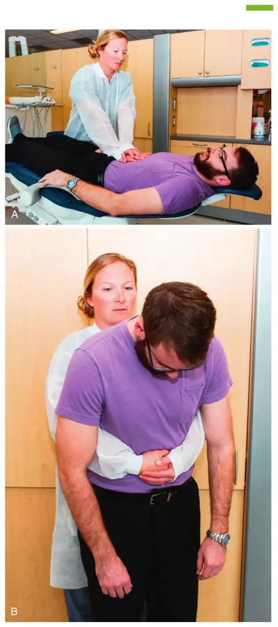
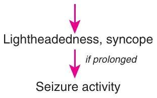

نسخه استخراجشده؛ ترجمه یا تأیید علمی انجام نشده است. وضعیت: captured
سنگبنای مدیریت فوریتها «پیشگیری» است، نه «درمان» — و پس از آن، آمادگی مهمترین عامل است.

ستون اول پیشگیری، ارزیابی پیش از عمل است: شرححال پزشکی دقیق، فهرست داروهای مصرفی، و شناسایی بیمارانی که ذخیرهی فیزیولوژیک کمتری دارند — همان گروههایی که در ماژول فارماکولوژی هم دیدیم.
ستون دوم، آمادگی سازمانی است — و این چیزی است که با خواندن به دست نمیآید: کل تیم باید بداند چه کسی چه کاری میکند، تجهیزات فوریت کجاست، و شمارهی اورژانس چگونه گرفته میشود. تمرین دورهای این سناریوها، بخشی از آمادگی است نه یک تشریفات.
و فوریتهای شایع مطب در چهار گروه جای میگیرند: واکنشهای حساسیتی، ناراحتی قفسهی سینه، دشواری تنفسی (از جمله آسپیراسیون)، و تغییر سطح هوشیاری (از سنکوپ تا اختلال عروق مغزی).
و یک قاعدهی طلایی که در تمام سناریوها تکرار میشود: راه هوایی، تنفس، گردش خون — به همین ترتیب. هر تشخیص افتراقی زیبایی که در ذهن داری، پس از این سه میآید نه پیش از آن.
در جراحی دهان، راه هوایی بیمار زیر دست توست — و همین آسپیراسیون جسم خارجی را در این رشته همیشه به خطری بالقوه تبدیل میکند.

دو موقعیت را باید از هم جدا کرد:
و همین دومی، دلیل اصلی قواعد ناشتایی پیش از سداسیون عمیق است — قاعدهای که در نیتروس اکساید سبکتر است ولی در سداسیون وریدی جدی.
و پیشگیری در جراحی دهان بسیار عملی است: گاز حلقی (تامپون حلق) برای بستن مسیر حلق، ساکشن آماده و در دسترس، کنترل مداوم قطعات و ابزار، و شمردن آنچه وارد دهان میشود و آنچه بیرون میآید.
و اگر چیزی گم شد، اولین فرض این است که بلعیده یا آسپیره شده — نه اینکه لابد افتاده روی زمین. رادیوگرافی قفسهی سینه و شکم، حتی وقتی مطمئنی بلعیده شده، برای تفکیک مسیر گوارشی از مسیر تنفسی ضروری است، و آسپیراسیون به مسیر تنفسی یک فوریت واقعی است؛ جسمی که بلعیده شده معمولاً بیخطر از دستگاه گوارش میگذرد و پیگیری کافی است.